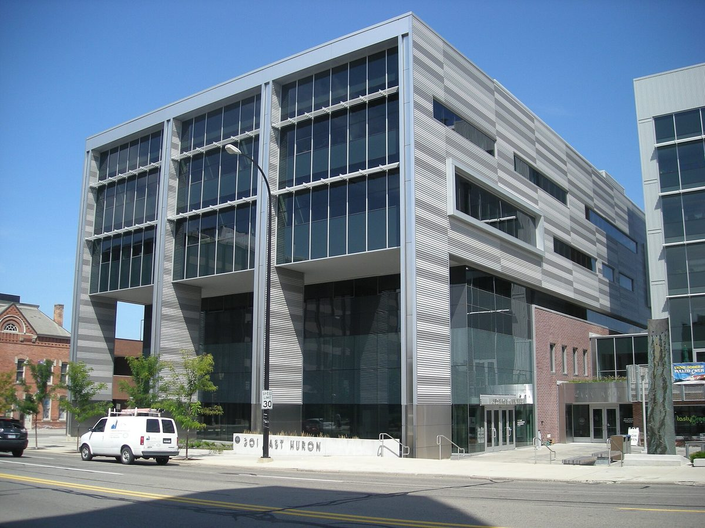

미국 앤아버 전 시의원, 시의회의 시영 전력 제안 E 반대 결의가 선거 중립 위반이라며 주 정부에 진정

10 대 1 결의로 시 변호사에 법적 다툼 지시하고 반대 발언 35분 방송한 것 문제 삼아…시의원 쪽은 투표 앞둔 엉터리 진정이라고 반박, 주 정부 판단은 아직
미국 미시간주 앤아버의 엘리자베스 넬슨 전 시의원이 10월 24일, 시의회가 시영 전력 전환안인 제안 E(Proposal E)에 반대하는 결의를 통과시킨 것은 미시간 선거자금법 위반이라며 주 정부에 진정을 냈다. 2018~2022년 4선거구 시의원을 지낸 넬슨 전 의원은 공공기관에 선거에서 엄격한 중립을 지키도록 한 같은 법 169.257조와, 선거 60일 안에 공공 자금으로 지방 투표 안건을 언급하는 방송·대량 우편 등을 금지한 조항을 근거로 들어, 시의회가 반대 발언 35분을 유튜브와 시 공공 방송채널(CTN)로 내보냈다고 주장했다. 진정서는 또 DTE 에너지의 지원을 받는 반대 단체의 우편물이 결의문의 "재정적으로 무모하다"는 표현을 인용했다고 지적했다. 시의회는 10월 5일 10 대 1로 결의를 통과시키며 시 변호사에게 제안 E를 법정에서 다투라고 지시했는데, 시영 전력 비용을 2억8,100만~11억5,000만 달러로 추산한 2023년 시 연구를 들어 재원 대책이 없다고 지적하고, 시 헌장상 전력 이사회를 만들 권한은 주민 발의가 아니라 시의회에 있다고 봤다. 11월 3일 투표에 오르는 제안 E는 통과되면 2028년까지 선출직 공영 전력 이사회를 꾸려 DTE 에너지 설비를 시 소유로 넘겨받는 일을 맡기는 안이다. 에리카 브리그스 시의원(5선거구)은 현지 매체 MLive에 이번 진정이 선거를 앞두고 유권자의 눈을 돌리려는 엉터리 진정이라고 말했으며, 주 정부의 판단은 아직 나오지 않았다.
시민에너지 관점
미시간 선거자금법 169.257조가 공공기관에 선거 중립을 요구하는 것은, 공공 자원을 쥔 쪽이 주민 투표의 결과를 기울게 해서는 안 된다는 원칙 때문이다. 시영 전력의 비용과 법적 쟁점을 따지는 것은 시의회의 책무라는 반론도 타당하며, 이번 진정이 실제 위반인지는 주 정부가 가릴 일이다. 다만 시의회가 시 헌장을 들어 전력 이사회 설치 권한이 자신에게 있다고 하면서 시의 지속가능 에너지 유틸리티(Sustainable Energy Utility)를 대안으로 내세운 것은, 에너지 전환의 방식을 누가 정하느냐가 결국 주민 발의와 대의기구 사이의 권한 문제라는 점을 드러낸다. 우리도 주민이 지역 에너지 사업을 발의하고 직접 결정하는 길을 제도로 열되, 지자체가 공공 자원으로 찬반 어느 한쪽에 서지 않도록 하는 중립 규칙을 함께 마련해야 한다.
출처: The Michigan Daily 2026-10-28 Niko Wilson 원문 보기
米アナーバーの元市議、市営電力提案Eへの市議会の反対決議は選挙中立違反だとして州に申し立て
10対1の決議で市弁護士に法廷闘争を指示し、反対発言35分を放送したことを問題視…市議側は投票前の根拠のない申し立てと反論、州の判断はまだ
米ミシガン州アナーバーのエリザベス・ネルソン元市議は10月24日、市議会が市営電力への転換案「提案E（Proposal E）」に反対する決議を可決したのはミシガン州選挙資金法違反だとして、州に申し立てを行った。2018〜2022年に第4区の市議を務めたネルソン氏は、公的機関に選挙での厳格な中立を求める同法169.257条と、選挙前60日以内に公金を使って地方の住民投票案件に触れる放送や大量郵送などを禁じた規定を根拠に、市議会が反対発言35分をユーチューブと市の公共放送チャンネル（CTN）で流したと主張した。申立書はまた、DTEエナジーの支援を受ける反対団体の郵送物が、決議文の「財政的に無謀」という表現を引用していると指摘した。市議会は10月5日に10対1で決議を可決し、市弁護士に提案Eを法廷で争うよう指示しており、市営電力の費用を2億8,100万〜11億5,000万ドルと見積もった2023年の市の調査を挙げて財源の裏付けがないと指摘するとともに、市憲章上、電力委員会を設置する権限は住民発議ではなく市議会にあるとの立場をとった。11月3日の投票にかけられる提案Eは、可決されれば2028年までに公選の公営電力委員会を設け、DTEエナジーの設備を市の所有に移す作業を担わせる内容だ。第5区のエリカ・ブリッグス市議は地元メディアMLiveに対し、今回の申し立ては選挙を前に有権者の目をそらすための根拠のないものだと述べており、州の判断はまだ出ていない。
市民エネルギーの視点
ミシガン州選挙資金法169.257条が公的機関に選挙中立を求めるのは、公共の資源を握る側が住民投票の結果を傾けてはならないという原則があるからだ。市営電力の費用や法的論点を吟味するのは市議会の責務だという反論にも理があり、今回の申し立てが実際に違反にあたるかは州が判断すべきことだ。ただ、市議会が市憲章を根拠に電力委員会の設置権限は自らにあるとしながら、市の「持続可能エネルギー・ユーティリティ（Sustainable Energy Utility）」を代案に掲げたことは、エネルギー転換のやり方を誰が決めるのかが、結局は住民発議と代議機関の間の権限の問題であることを浮き彫りにしている。韓国でも住民が地域エネルギー事業を発議し、直接決められる道を制度として開くと同時に、自治体が公共の資源で賛否の一方に立たないよう中立のルールを整えるべきだ。
出典: The Michigan Daily 2026-10-28 ニコ・ウィルソン（Niko Wilson） 原文を読む
美国安娜堡前市议员向州政府投诉，称市议会反对市营电力提案E的决议违反选举中立
质疑市议会以10比1通过决议、指示市律师提起法律挑战并播出35分钟反对发言…市议员方面反驳称是投票前的不实投诉，州政府尚未作出判断
美国密歇根州安娜堡前市议员伊丽莎白·纳尔逊（Elizabeth Nelson）于10月24日向州政府提出投诉，称市议会通过反对市营电力转型方案"提案E"（Proposal E）的决议，违反了密歇根州竞选资金法。2018年至2022年曾任第4选区市议员的纳尔逊援引该法要求公共机构在选举中保持严格中立的第169.257条，以及禁止在选举前60天内动用公共资金通过广播、大规模邮寄等方式提及地方投票议题的条款，指控市议会通过YouTube和市公共电视频道（CTN）播出了35分钟的反对发言。投诉书还指出，由DTE能源公司支持的反对团体所寄发的邮件引用了决议中"财务上鲁莽"的说法。市议会于10月5日以10比1通过该决议，并指示市律师就提案E诉诸法庭；市议员援引2023年市政研究对市营电力成本2.81亿至11.5亿美元的估算，批评提案缺乏资金来源，并认为根据市宪章，设立电力委员会的权力属于市议会而非居民发起的投票提案。将于11月3日付诸投票的提案E若获通过，须在2028年前选举产生公营电力委员会，负责把DTE能源公司的设施转为市有。第5选区市议员埃丽卡·布里格斯（Erica Briggs）对当地媒体MLive表示，这是在选举前为转移选民注意力而提出的不实投诉；州政府目前尚未作出判断。
市民能源视角
密歇根州竞选资金法第169.257条要求公共机构在选举中保持中立，是基于掌握公共资源的一方不得左右居民投票结果这一原则。有人反驳说，审视市营电力的成本和法律争点是市议会的职责，这也有道理，而这次投诉是否真的构成违法，应由州政府判定。不过，市议会一方面以市宪章为据主张设立电力委员会的权力在己，另一方面把市里的"可持续能源公用事业"（Sustainable Energy Utility）作为替代方案，这表明由谁来决定能源转型的方式，归根结底是居民提案与代议机构之间的权限问题。韩国也应在制度上为居民发起并直接决定地方能源项目开辟道路，同时制定中立规则，防止地方政府动用公共资源站在赞成或反对的一方。
来源: The Michigan Daily 2026-10-28 Niko Wilson 查看原文
Former Ann Arbor council member files state complaint alleging the City Council's resolution against public power Proposal E broke election neutrality rules
Complaint targets the 10-1 resolution directing the city attorney to challenge the measure in court and the broadcast of 35 minutes of opposing remarks; a council member calls it a bogus complaint ahead of the vote, and the state has yet to rule
Elizabeth Nelson, a former Ann Arbor City Council member in Michigan, filed a complaint with the state on 24 October alleging that the council violated the Michigan Campaign Finance Act by passing a resolution opposing Proposal E, the ballot measure to move the city to municipal power. Nelson, who represented Ward 4 from 2018 to 2022, cited Section 169.257 of the act, which requires public bodies to maintain strict neutrality in elections, and a provision barring the use of public funds within 60 days of an election for broadcasts, mass mailings and similar communications that reference a local ballot question, arguing that the council aired 35 minutes of statements opposing the measure on YouTube and the city's Community Television Network (CTN). The complaint also points out that a mailer from an opposition group backed by DTE Energy quoted the resolution's description of the proposal as "financially reckless". The council passed the resolution 10-1 on 5 October and directed the city attorney to challenge Proposal E in court, citing a 2023 city study that put the cost of a municipal utility at $281 million to $1.15 billion to argue that no adequate funding had been identified, and holding that the city charter gives the council, not citizen ballot proposals, the power to create utility boards. If approved in the 3 November vote, Proposal E would require the city to elect a public utility board by 2028 to oversee the transfer of DTE Energy's assets to municipal ownership. Council member Erica Briggs (Ward 5) told local outlet MLive the complaint was a bogus attempt to distract voters before the election, and the state has not yet ruled on it.
Citizen Energy View
Section 169.257 of Michigan's campaign finance law requires public bodies to stay neutral in elections because those who control public resources should not tilt the outcome of a citizens' vote. It is a fair objection that weighing the cost and legal questions of municipal power is part of a council's job, and whether this complaint describes an actual violation is for the state to decide. Yet by citing the city charter to claim the power to create utility boards while promoting the city's own Sustainable Energy Utility as the alternative, the council has shown that deciding how the energy transition happens comes down to a question of authority between citizen initiatives and elected bodies. Korea should open institutional routes for residents to propose and directly decide local energy projects, and at the same time set neutrality rules so that local governments do not use public resources to take one side.
Source: The Michigan Daily 2026-10-28 Niko Wilson Read the original